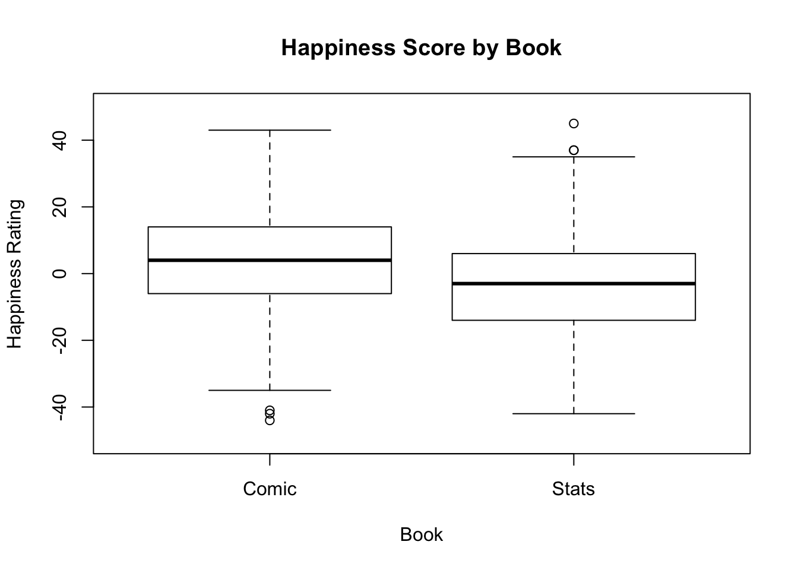
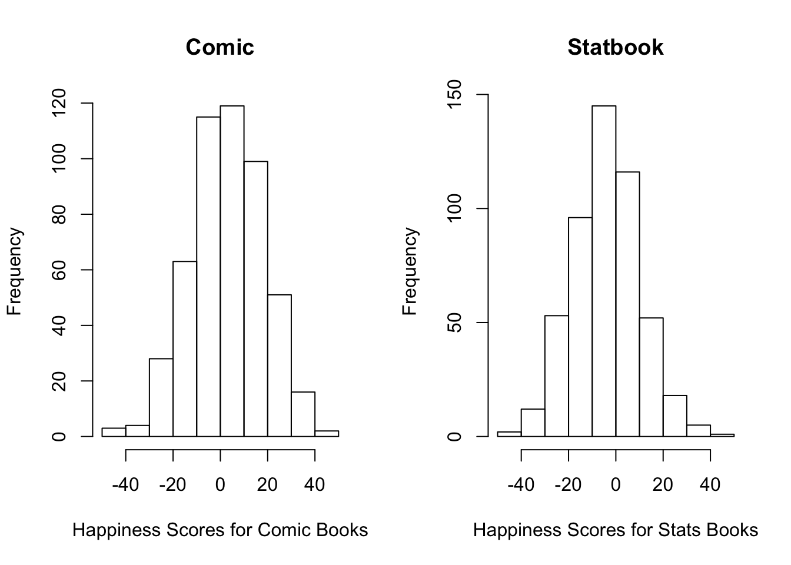
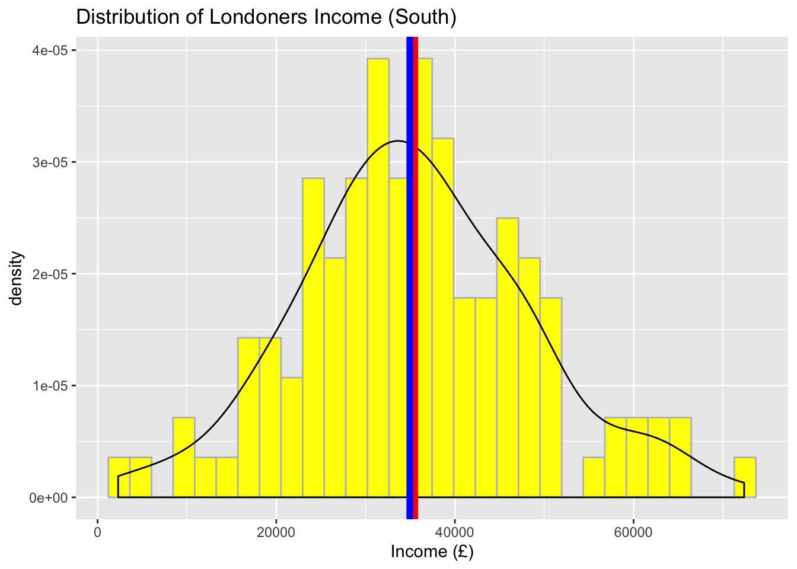
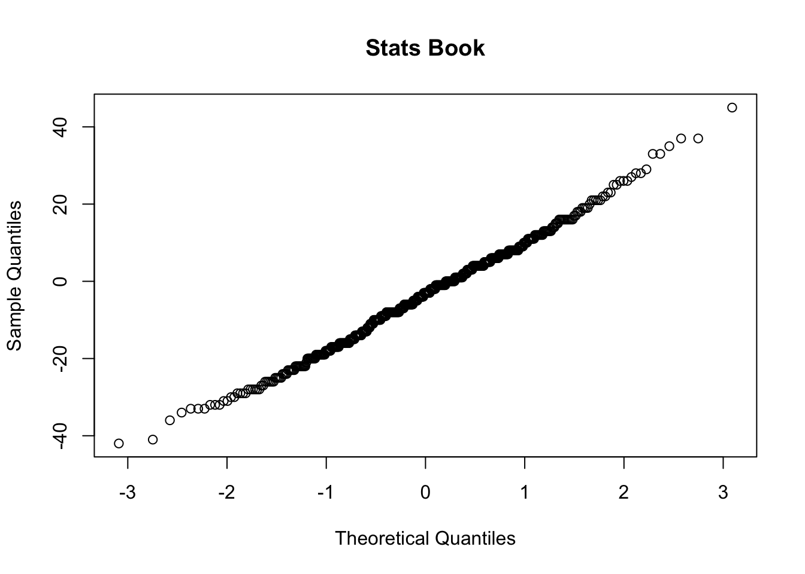
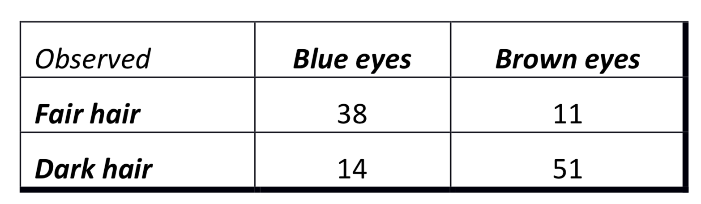
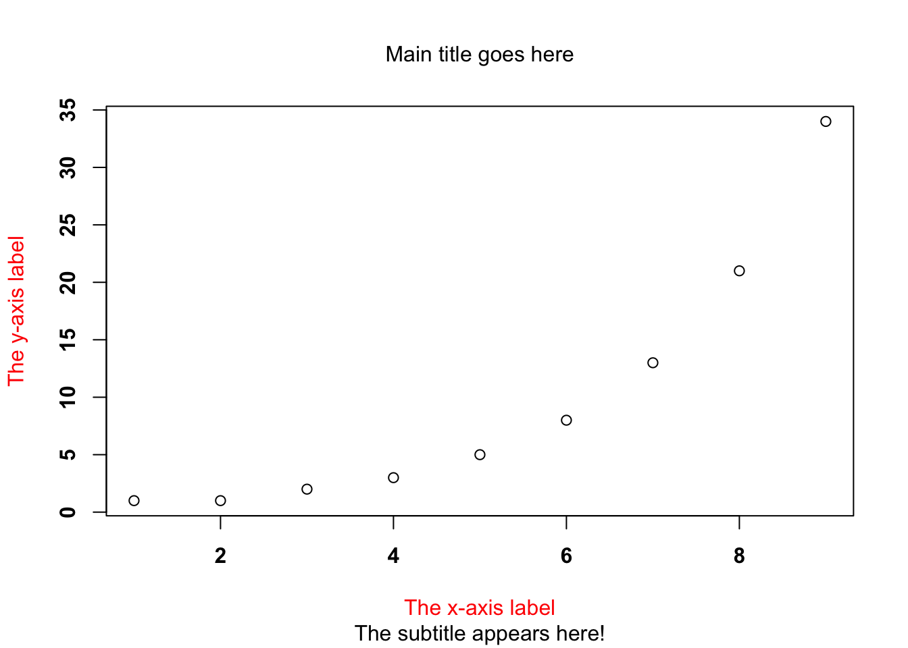
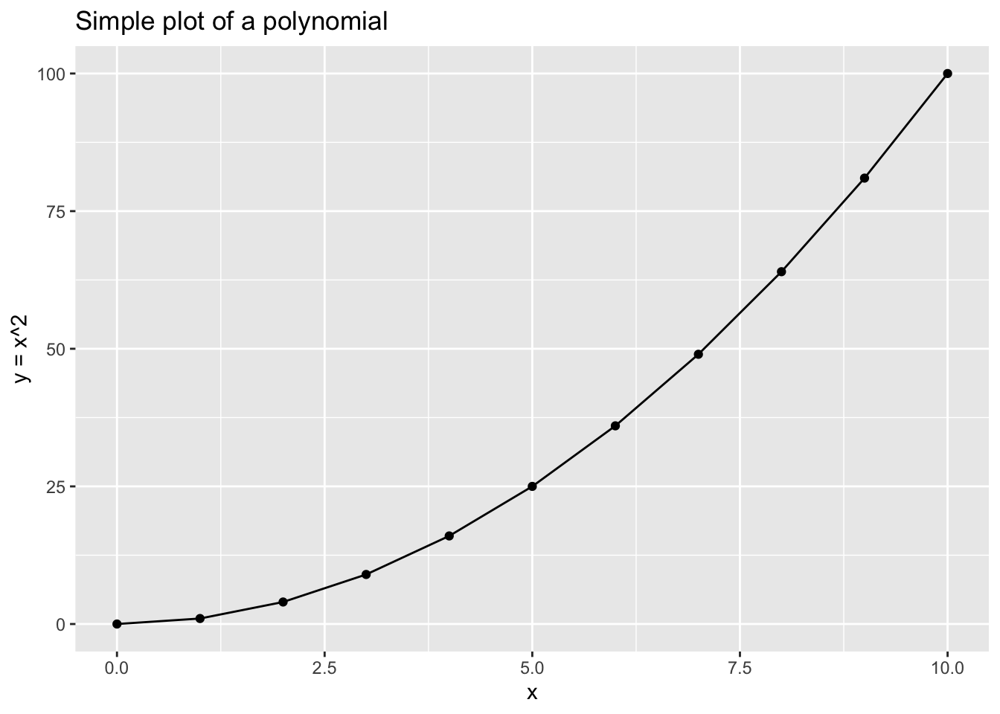
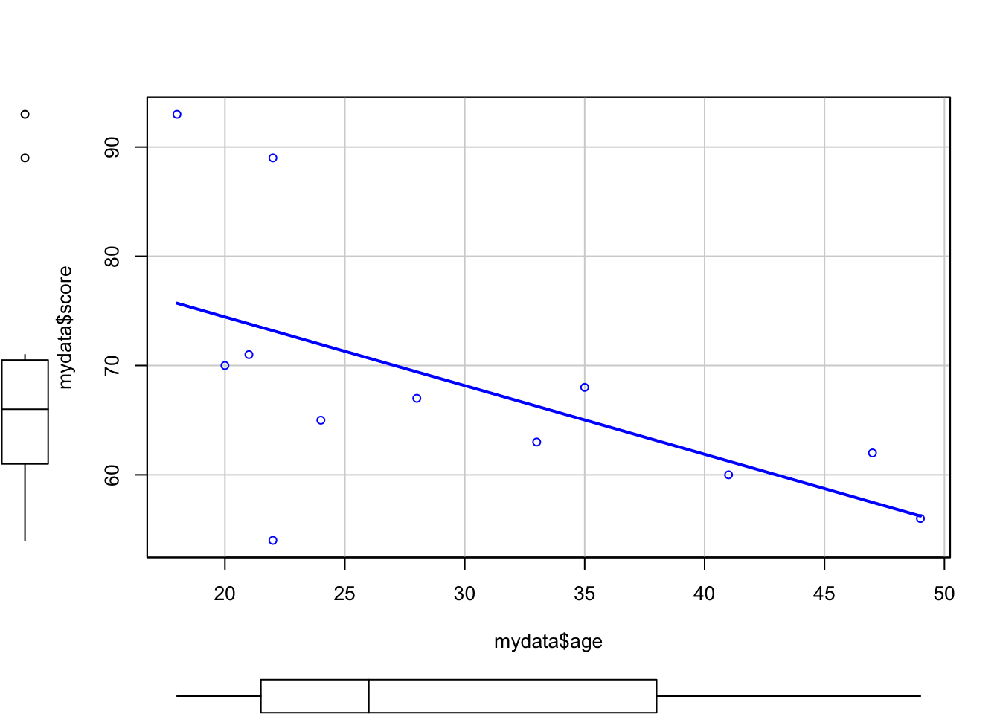

Chapter 16 Examining Relationships (more than one variable)
You are probably familiar with two of the most typical ways of examining the differences between the distributions that generated variables in your data. We will briefly discuss those here with the reference to two sample t test and chi-squared test. We will also attempt to do these in R, and report the results. Assumptions diagnostics tools will be presented briefly.
Above we have seen an example with one sample t test. Imagine now, we have a variable that is grouped by another variable (i.e. treatment, condition) and we would like to test whether the means in both groups come from the same distribution. Pretty common set up, right?
16.1 T test
We will do an example of a paired t test below. This test is used to determine whether there is a difference between two groups within the population.
Problem overview
Our null hypothesis: There is no difference between the effects on happiness levels from reading order for a stats book and a comic book
Our alternative hypothesis: There is a difference between the effects on happiness levels from reading order for a stats book and a comic book
Researchers enrolled 500 subjects and made them read both a comic books and a statistics book. Some people read the comic book first, others read the statistics book first, to counterbalance. There was a delay of six days in between the two reads. The researchers then measured their happiness in a scale going from 50 (bliss) to -50 (tearful).
Our main steps will be:
- Import the data from the file
books.csv - Explore the data and check for assumptions
- Choose an appropriate test to check for differences
- Run an
Rcommand (with appropriate parameters) to execute the test you chose - Write up the results in a short paragraph
#Load psych
library(psych)books <- read.csv("books.csv", header = T)That’s step 1 complete.
Now lets get some summary statistics and make some basic plots. Break this down into smaller tasks:
- Look at the data structure
*Examine the data using functions
summaryand/ordescribe(if you really want to, you can use thedescribeBy()function here too) - Report how many variables are in the data sets, their mean, standard deviation and standard error of the mean
- Use
boxplotto plot the median and quantiles. Title the axes appropriately, and change the axis limits to reflect the min and max possible scores.
str(books)## 'data.frame': 500 obs. of 2 variables:
## $ comic : int -44 20 0 -18 -19 13 16 14 -6 11 ...
## $ statbook: int 16 -14 6 -13 7 -33 3 -7 -6 -3 ...summary(books) ## comic statbook
## Min. :-44.00 Min. :-42.000
## 1st Qu.: -6.00 1st Qu.:-14.000
## Median : 4.00 Median : -3.000
## Mean : 3.62 Mean : -3.596
## 3rd Qu.: 14.00 3rd Qu.: 6.000
## Max. : 43.00 Max. : 45.000#or
describe(books)## vars n mean sd median trimmed mad min max range skew
## comic 1 500 3.62 15.05 4 3.79 14.83 -44 43 87 -0.12
## statbook 2 500 -3.60 14.14 -3 -3.74 14.83 -42 45 87 0.13
## kurtosis se
## comic -0.02 0.67
## statbook 0.01 0.63#visualise
boxplot(books$comic, books$statbook,
names = c("Comic", "Stats"),
main = "Happiness Score by Book",
xlab = "Book",
ylab = "Happiness Rating",
ylim = c(-50, 50)
)
Check the assumptions in R, these are also very common for other tests, including ANOVA and linear models.
Normality To check for normality or in other words, if the variables we want to analyse are normally distributed we can use both specific statistical tests and histograms.
We can use the Shapiro-Wilk test using one line of code in R. The null hypothesis of this test is that the data are normally distributed, and the alternative is that the data are not normally distributed.
To run this, try the following:
#Test for normality
shapiro.test(books$comic)##
## Shapiro-Wilk normality test
##
## data: books$comic
## W = 0.99677, p-value = 0.421shapiro.test(books$statbook)##
## Shapiro-Wilk normality test
##
## data: books$statbook
## W = 0.99612, p-value = 0.2609#Interpret the output: the p-value is greater than the significance level 0.05, and thus implied that the distribution of the data are not significantly different from the normal distribtion. Put simply, we can assume normality.
# Check visually for normality
par(mfrow=c(1,2)) # par() here displays plots in a 1 by 2 matrix
hist(books$comic, main = "Comic", xlab="Happiness Scores for Comic Books")
hist(books$statbook, main = "Statbook", xlab= "Happiness Scores for Stats Books")
Or using qqnorm:
qqnorm(books$comic, main = "Comic Book")
qqnorm(books$statbook, main = "Stats Book")
Variance check
Some tests assume that although your different samples can come from populations with different means, that they do have the same variance. Equal variances (homoscedasticity) is when the variances are approximately the same across your samples. Unequal variances (heteroscedasticity) can affect the Type I error rate, lead to false positives, and lead to incorrect conclusions.
To check whether you have an equal variance among two groups, we can use a simple test. Conveniently, it is called var.test and the null hypothesis we are testing is whether the ratio of two variances is equal to one or in other words:
# Check for equality of variance
var.test(books$comic, books$statbook,
ratio = 1, #the more our ratio deviates from 1, the stronger the evidence for unequal variances
conf.level = .95)##
## F test to compare two variances
##
## data: books$comic and books$statbook
## F = 1.1324, num df = 499, denom df = 499, p-value = 0.1652
## alternative hypothesis: true ratio of variances is not equal to 1
## 95 percent confidence interval:
## 0.949963 1.349898
## sample estimates:
## ratio of variances
## 1.13241#Interpret your output: The p-value of is greater than the significance level 0.05. There is no significant difference between the two variances.Looking good!
Finally lets run the test.*
Examine the arguments below carefully and pick whether you want to use paired or var.equal.
The one we will use:
# Paired t-test
t.test(books$comic, books$statbook,
paired = TRUE, #is our data paired? Yes, each individual read both books, and we have 'pairs of observations'
var.equal = TRUE #can we assume equal variances? Yes, given the results above
)##
## Paired t-test
##
## data: books$comic and books$statbook
## t = 7.4608, df = 499, p-value = 3.847e-13
## alternative hypothesis: true difference in means is not equal to 0
## 95 percent confidence interval:
## 5.31574 9.11626
## sample estimates:
## mean of the differences
## 7.216Study the results. What do you conclude?
We might say something along the lines of…
Researchers enrolled 500 subjects and made them read both a comic books and a statistics book. Some people read the comic book first, others read the statistics book first, to counterbalance. There was a delay of six days in between the two reads. The researchers then measured their happiness in a scale going from 50 (bliss) to -50 (tearful).
A paired-samples t-test was conducted to compare the happiness levels in relation to the reading order of comic and stats book reading. There was a significant difference in the scores for reading the comic book (M=3.62, SD=15.05) and the stat book (M=-3.60, SD=14.14) conditions; t(499)=7.22, p < .01
16.2 Chi squared distribution and test
When discussing the uses of the normal distribution, we generally assumed a large number of samples (> 30), here we consider small samples (< 30) theory. A more suitable name could be ‘exact sampling theory’ since the results obtained hold for large samples as well as small samples. Three important small samples distributions are the chi-square distribution, F distribution and the Student’s t-test distribution.
16.2.1 Contingency tables
A categorical variable consists of possible responses in the form of a set of categories rather than numbers on a continuous scale. Categorical variables may be inherently categorical, such as gender (male, female or other), or political affiliation. Or they may be created by categorizing a continuous or discrete variable. For example, blood pressure can be recorded in specific measurements such as 120/80 mmHg, or defined as “low”, “normal”, “pre-hypertensive”, “hypertensive”.
Ordinal variables are categorical variables in which the categories might be ranked in order, such as the Likert scale (strongly agree, agree, neutral, disagree and strongly disagree). A specific set of analytical techniques has been developed for ordinal data, even if categorical techniques can also be applied.
16.3 Chi squared distribution
Hypothesis testing on categorical variables requires a way to evaluate whether our results are significant. With RxC tables, the statistic of choice is often one of the chi-square tests, which draw on known properties of the chi-square distribution.
The chi-square distribution is a continuous theoretical probability distribution, a special case of the gamma distribution, with only one parameter k which specifies the degrees of freedom (remember, the normal distribution had two parameters: the mean and the standard deviation).The chi-square distribution has the following properties:
- The mean of the distribution is equal to the number of degrees of freedom: μ = df.
- The variance is equal to two times the number of degrees of freedom: σ2 = 2 * df
- The chi-square distribution only has positive values, because is based on the sum of squared quantities (as indicated by its name, chi square) and is right-skewed
- As the degrees of freedom increase, the chi-square curve approaches a normal distribution. As k approaches infinity, the chi-square distribution approaches a normal distribution.

For this exercise, we can generate the data ourselves. We want to replicate the following table:

Create the data in a matrix:
#Create matrix
eyedata <- matrix(c(38, 14, 11, 51), nrow = 2)
eyedata## [,1] [,2]
## [1,] 38 11
## [2,] 14 51colnames(eyedata) <- c("Blue Eyes","Brown Eyes")
rownames(eyedata) <- c("Fair Hair","Dark Hair")The chi-squared test tests the hypothesis that there is no relationship between two categorical variables. It compares the observed frequencies from the data with frequencies which would be expected if there was no relationship between the variables. Let’s visualise the relationship:
#Plot the data
barplot(prop.table(eyedata)*100,
xlab='Eye Colour',ylab='Percentages',
main="Percentage eye colour by hair colour",beside=T,col=c("yellow","brown"),
ylim = c(0,100),
legend=rownames(eyedata), args.legend = list(x = "top"))
What does the plot tell us?
There does seem to be an association between hair and eye colour. Clearly, those with blue eyes seem to have fair hair, and those with brown eyes seem to have dark hair.
We can run the test and assign the results to the object (i.e. ‘eyeresults’)
eyeresults <- chisq.test(eyedata)
eyeresults##
## Pearson's Chi-squared test with Yates' continuity correction
##
## data: eyedata
## X-squared = 33.112, df = 1, p-value = 8.7e-09prop.table(eyedata)## Blue Eyes Brown Eyes
## Fair Hair 0.3333333 0.09649123
## Dark Hair 0.1228070 0.44736842We have a chi-squared value of 33.11. Since we get a p-value less than the significance level of .05, we reject the null hypothesis and conclude that the two variables are dependent. Written more formally: A Pearson’s Chi-Squared test was carried out to assess whether eye colour and hair colour were related. There was significant evidence of an association, (χ2(1) = 33.11, p < .001).
We can further analyse the residuals. This is one of the approaches to study which cells contributed to the significance of the test. A residual is the difference between the observed and expected values for a cell. The larger the residual, the greater the contribution of the cell to the magnitude of the resulting chi-square.
#Get the residuals from the results object
eyeresults$residuals## Blue Eyes Brown Eyes
## Fair Hair 3.310112 -3.031437
## Dark Hair -2.873982 2.632024What do you conclude?
By looking at the residuals, we can determine which categories have the largest difference between the expected counts and the actual counts relative to sample size. We can see that these differences are largest for the fair hair conditions. The sign matters here too - a positive value tells you that there were more X than expected, and a negative value tells you that there were less. That means in our sample, looking at the fair hair condition, there were more blue eyes, but less brown, than expected.
16.4 One way Anova
Here we will present simple one way analysis of variance (ANOVA) example, as we extend on the t test we saw earlier. The one-way ANOVA is used to determine whether there are any statistically significant differences between the means of two or more independent (unrelated) groups. The extensions to other types of ANOVA can be easily build on top of this baseline. If you are dealing with repeated measures ANOVA, you will find package ezAnova to be quite useful. We won’t be covering it here but we hope that once you mastered R over these few days you wont need our help to get yourself going with other packages :)
We will use the data set that has data on effects on blood pressure from taking various pain-relief medication. This is the exp data from the last session.
#Load the data
experiment<-read.csv('dose.csv')#Look at the data structure
str(experiment)## 'data.frame': 15 obs. of 3 variables:
## $ ID : int 1 2 3 4 5 6 7 8 9 10 ...
## $ dose : int 1 1 1 1 1 2 2 2 2 2 ...
## $ effect: int 3 2 1 1 4 5 2 4 2 3 ...#Recode dose as a factor
experiment$dose <- factor(experiment$dose, levels=c(1,2,3), labels = c("Placebo", "Low_dose", "High_dose"))Lets summarise the data. In R there are quite a few ways that can present you nice descriptive statistics of variables by groups.
Using describe from psych:
describeBy(experiment$effect, experiment$dose)##
## Descriptive statistics by group
## group: Placebo
## vars n mean sd median trimmed mad min max range skew kurtosis se
## X1 1 5 2.2 1.3 2 2.2 1.48 1 4 3 0.26 -1.96 0.58
## --------------------------------------------------------
## group: Low_dose
## vars n mean sd median trimmed mad min max range skew kurtosis se
## X1 1 5 3.2 1.3 3 3.2 1.48 2 5 3 0.26 -1.96 0.58
## --------------------------------------------------------
## group: High_dose
## vars n mean sd median trimmed mad min max range skew kurtosis se
## X1 1 5 5 1.58 5 5 1.48 3 7 4 0 -1.91 0.71#And plot using boxplot directly
boxplot(experiment$effect~experiment$dose,
ylab='Pain Relief Effect',
main='Effect on pain from each condition',
col=rainbow(3))
What does the boxplot tell us?
Generally speaking, it shows that there does seem to be differences between the groups. It also shows that each dose group has a different amount of variation/spread in pain relief effect, and that there is overlap between the groups.
We can also extract the means and sd for our groups:
#Get the means
means <- by(data = experiment[, "effect"], INDICES = experiment$dose, FUN = mean)
means## experiment$dose: Placebo
## [1] 2.2
## --------------------------------------------------------
## experiment$dose: Low_dose
## [1] 3.2
## --------------------------------------------------------
## experiment$dose: High_dose
## [1] 5#Get standard deviaation
by(data = experiment[, "effect"], INDICES = experiment$dose, FUN = sd)## experiment$dose: Placebo
## [1] 1.30384
## --------------------------------------------------------
## experiment$dose: Low_dose
## [1] 1.30384
## --------------------------------------------------------
## experiment$dose: High_dose
## [1] 1.581139Another way would be to install pasctecs package and get full descriptives for each group, including confidence intervals and standard error of the mean estimates:
# install 'pasctecs' and get detailed descriptive stats for each group
library(pastecs)
by(data = experiment[, "effect"], INDICES = experiment$dose, FUN = stat.desc)## experiment$dose: Placebo
## nbr.val nbr.null nbr.na min max
## 5.0000000 0.0000000 0.0000000 1.0000000 4.0000000
## range sum median mean SE.mean
## 3.0000000 11.0000000 2.0000000 2.2000000 0.5830952
## CI.mean.0.95 var std.dev coef.var
## 1.6189318 1.7000000 1.3038405 0.5926548
## --------------------------------------------------------
## experiment$dose: Low_dose
## nbr.val nbr.null nbr.na min max
## 5.0000000 0.0000000 0.0000000 2.0000000 5.0000000
## range sum median mean SE.mean
## 3.0000000 16.0000000 3.0000000 3.2000000 0.5830952
## CI.mean.0.95 var std.dev coef.var
## 1.6189318 1.7000000 1.3038405 0.4074502
## --------------------------------------------------------
## experiment$dose: High_dose
## nbr.val nbr.null nbr.na min max
## 5.0000000 0.0000000 0.0000000 3.0000000 7.0000000
## range sum median mean SE.mean
## 4.0000000 25.0000000 5.0000000 5.0000000 0.7071068
## CI.mean.0.95 var std.dev coef.var
## 1.9632432 2.5000000 1.5811388 0.3162278ANOVA will allow us to test whether these variations between the dose means are due to true differences about the group means or if they are just due to sampling variability.
We can now run our ANOVA test, but let us first check that the assumption for the equal variances is met. We will do this using the Levene Test, which is used to assess the equality of variances for a variable calculated for two or more groups. The null hypothesis is that all variances are equal.
#We will need to load package 'car' first
library(car)Levene test:
leveneTest(y =experiment$effect, #response variable
group = experiment$dose, #actor defining group
center = median #median, provides a more robust test
)## Levene's Test for Homogeneity of Variance (center = median)
## Df F value Pr(>F)
## group 2 0.1176 0.89
## 12A quick interpretation of the output would be: Since the p-value is greater than .05, this indicates that there is no significant difference in variances between the dose groups in effect scores.
#Run ANOVA
drugAnova <- aov(formula = effect ~ dose,
data = experiment)
#Summarise results
summary(drugAnova)## Df Sum Sq Mean Sq F value Pr(>F)
## dose 2 20.13 10.067 5.119 0.0247 *
## Residuals 12 23.60 1.967
## ---
## Signif. codes: 0 '***' 0.001 '**' 0.01 '*' 0.05 '.' 0.1 ' ' 1ANOVA calculates a parameter called the F statistic, which compares the variation between sample means (among different dose conditions in our case) to the variation within groups (within dose groups). The variation of pain relief effect between different doses is much larger than the variation of pain relief effect within each dose condition.
In our one-way ANOVA test, the significant p-value indicates that some of the group means are different, but we don’t know which ones. All we can conclude so far is that there is a significant relationship between dose and pain relief effects. Linear regression may aid our understanding about which means were significantly different.
#Summarise as linear model
summary.lm(drugAnova)##
## Call:
## aov(formula = effect ~ dose, data = experiment)
##
## Residuals:
## Min 1Q Median 3Q Max
## -2.0 -1.2 -0.2 0.9 2.0
##
## Coefficients:
## Estimate Std. Error t value Pr(>|t|)
## (Intercept) 2.2000 0.6272 3.508 0.00432 **
## doseLow_dose 1.0000 0.8869 1.127 0.28158
## doseHigh_dose 2.8000 0.8869 3.157 0.00827 **
## ---
## Signif. codes: 0 '***' 0.001 '**' 0.01 '*' 0.05 '.' 0.1 ' ' 1
##
## Residual standard error: 1.402 on 12 degrees of freedom
## Multiple R-squared: 0.4604, Adjusted R-squared: 0.3704
## F-statistic: 5.119 on 2 and 12 DF, p-value: 0.02469We can see how much difference in expected effect on pain relief can be found from high and low dose of medicine versus the placebo. These results indicate that there was a significant difference between the placebo and high dose groups, but not between placebo and low dose.
Another way to determine where the differences are between the groups would be to use the post-hoc Tukey test.
Tuk<- TukeyHSD(drugAnova)
Tuk## Tukey multiple comparisons of means
## 95% family-wise confidence level
##
## Fit: aov(formula = effect ~ dose, data = experiment)
##
## $dose
## diff lwr upr p adj
## Low_dose-Placebo 1.0 -1.3662412 3.366241 0.5162761
## High_dose-Placebo 2.8 0.4337588 5.166241 0.0209244
## High_dose-Low_dose 1.8 -0.5662412 4.166241 0.1474576plot(Tuk) #Significant differences are the ones which not cross the zero value.